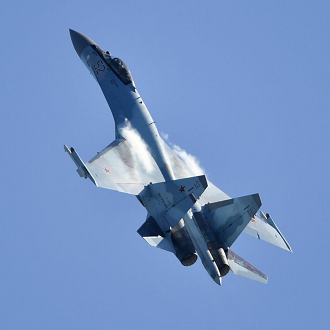
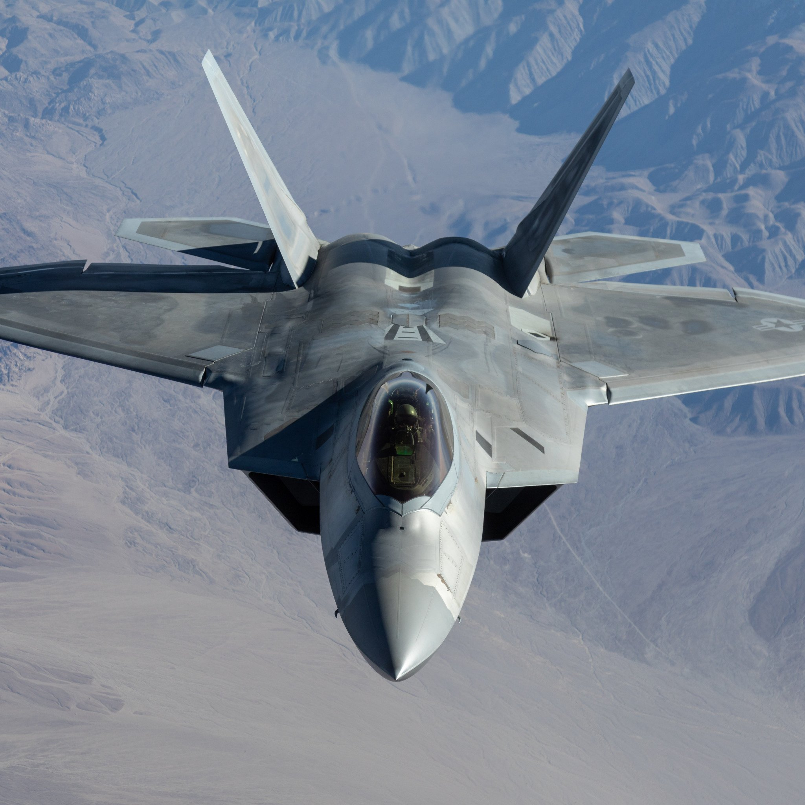
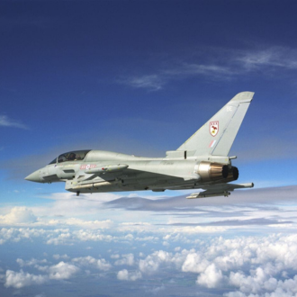
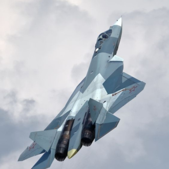

-
SU-35
Descrição
O SU-35, desenvolvido pela força aérea russa, é também considerado um dos melhores aviões militares da atualidade. Tem como destaque, sua supermanobrabilidade devido aos motores turboreativos AL-41F1S, que o permite realizar manobras muito difíceis evitando os mísseis inimigos. Além de obeter ataques de ângulos muito altos.
Para mais informações clique aqui -
F-22 Raptor
Descrição
Construido pelos americanos, o F-22 Raptor, foi o primeiro caça de 5° geração que entrou em operação, e é considerado por especialistas (americanos) como o "rei do ceús", devido sua incrível tecnologia furtiva e seus poderosos armamentos de longo alcance, que não precisam de contato visual para destruir seus inimigos.
Para mais informações clique aqui -
JAS 39 Gripen

Descrição
Construido pela Saab (empresa sueca), o Gripen é um caça de 4° geração, multimissão e que consegue chegar a MACH 2 com seu motor Volvo RM12; sendo criado para substituir caças como o Draken da Força Aérea Sueca. O Brasil é um dos países a adotar o caça, com a compra de 36 aeronaves.
Para mais informações clique aqui -
Eurofighter
Descrição
O Eurofighter Typhoon, é outro caça multimissão de 4° geração, projetado para ter um incrível desempenho em todas as suas missões; seu design combinado com as asas canard-delta e os motores Eurojet EJ200, permitem a aeronave chegar a MACH 2,35 (2.500km/h); ele também é equipado com o canhão MK 27 e pode carregar variados mísseis e bombas.
Para mais informações clique aqui -
SU-57
Descrição
Como disse o lider russo "Este é o melhor caça atualmente", o SU-57 é uma aeronave projetada para destruir qualquer tipo de inimigo seja naval, terrestre ou aéreo, de longas e curtas distâncias; tendo a capacidade de superar quaquer defesa através de sua manobrabilidade (melhorada em comparação com o SU-35) combinada com seus mísseis hiperssônicos de alta tecnologia e sua configuração aerodinâmica, assegurando o baixo índice de assinatura em radares.
Para mais informações clique aqui -
F-35 Lightning II

Descrição
Semelhante ao seu irmão, F-22, o F-35 Lightning II é um caça supersônico stelth e multi-função; podendo ser utilizado em quase todas as situações, e tendo o alcance de MACH 1.6 (1.960km/h). Esta é a única aeronave de 5° geração a ter uma versão de pouso e decolagem vertical, o meio é chamado de VTOL.
Para mais informações clique aqui